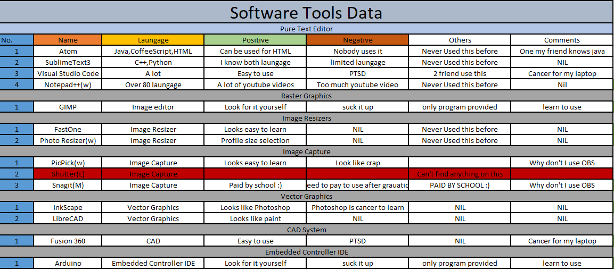

Selecting the right tool for the job is crucial! This guide shows how I choose the proper software for each job.
I started by recording down the tools offered and listing the advantages and disadvantages.

This list is taken from the start of the project and is updated as I progress further into the module. To see
how much I how much I had improved over to past few weeks, take a look at my old site. It may not be much
but I could improve by creating more sites (or learn to use bootstrap).
This is how my logo is created!
This video shows you how my logo is created using Vectr before creating the logo, I watched skim through a video tutorial
on logo creation using vectr.
About Vectr
Vectr is a free graphics program that allows you to make vector images quickly and effortlessly. It's a simple yet powerful cross-platform web and desktop application for bringing your ideas to life.
Vectr can be used to create clean and crisp logos of any scale and can is easy to learn from just a simple youtube video.
Creating my chess piece
My knight chess piece is created using fusion 360, I would show you the process and a video to aid you in creating your own chess piece.
About Fusion 360
Fusion 360 is a cloud-based 3D modeling, CAD, CAM, CAE, and PCB software platform for product design and manufacturing. In EP1000 Fusion is used to create
CAD models for 3D printing and Laser cutting.
Additive manufacturing
Additive manufacturing (AM) is defined as joining material to make object from 3D model data, usually layers upon layer as opposed to subtractive.
AM allows conformal cooling channels, functional complexity and consolidate designs to be printed while allowing integration of parts to reduce assembly cost and time.
AM benefits includes:
AM drawbacks includes:
Shape complexity
Weight reduction
Material complexity
Poor mechanical properties
Slow Printing
Material limitation
Before you start designing a model for 3d printing, there are some important things we must take note of to get a proper print.
In my case I know that the piece would be printed via material extrusion.
Things to take note of when designing a part for 3d printing:
Wall thickness to have a min of 1mm (any thinner and the part would be too fragile)
supports are required for parts with 45 degree overhang.
any engraving to have a min of 1mm width and 0.3 depth.
engraving is preferred over embossed.
any features to have a min of 2mm.
minimize the Z axis(height) and support structure to reduce the manufacturing cost.
To see how I design my knight piece click here(WIP) click here!
Designing a knight piece
Knowing the dimention of the part you are designing and making is the first thing you should do, provided below are the dimension of the knight piece
Take the dimensions of the knight piece to be the one in the photo to the left.